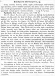

Click on images to enlarge
{kind=link}

Fig. 1. Trachymela hartmeyeri description
Name
Trachymela hartmeyeri Weise, 1908
Corresponds to
Ta182.
Diagnosis and Notes
Weise's description of this species is quite good and it is almost certain that the species he is describing is the same as Ta182. The size range he gives exactly coincides with the size distribution for that species, and the structure and colouration is as he describes. In particular, the black markings on the pronotum of Ta182 are exactly as described by Weise. There are several other species with a similar appearance (reddish-testaceous, with series of black verrucae on the elytra) in south-western Western Australia, and of those Ta154 is of about the same size. However, the black ventral surface of Ta154 serves as a quick discriminative character.
Type specimen
Not examined.
Original description
Translation of original description (Figure 1) by ChatGPT, 04/2026:
Ovate, convex, testaceous, shining; head and pronotum reddish-testaceous, marked with black spots, densely and finely punctate, the pronotum more strongly punctate toward the sides; scutellum sparsely punctulate; elytra punctate-substriate, the intervals sparsely punctulate and furnished with small verrucae arranged in rows.
Length 6–6.5 mm.
Closely related and similar to Tr. sloanei (Blackburn), on average smaller and much more shining. The head much more finely, very densely, but not rugosely punctured, with two black spots on the frons between the eyes, usually united into a transverse patch; the vertex always light-coloured. The thorax is smaller, both somewhat narrower and shorter; on the disc, like the head, finely and densely punctured; on each side with two black spots behind the eyes. These spots are only rarely small, equal in size, and rounded; in that case, the inner one lies nearer the anterior margin than the outer. Usually both are larger and elongate; the inner one, which does not quite reach the base but does reach the anterior margin, resembles a narrow longitudinal band that suddenly becomes angularly widened inward before the middle. Between these two spots there is a broad, shallow depression, which continues inward as a slight transverse impression parallel to the anterior margin, extending into the corresponding depression on the other side. The puncture-rows of the elytra are much finer than in sloanei, but more distinct and regular; the rather small, weakly elevated, mirror-smooth black tubercles of these are not quite regularly arranged in nine rows, with an additional abbreviated row at the scutellum; they are almost always separated from one another by a fine, pale, unicolorous interval. The second (complete) row is usually almost regularly spotted, though the first two or three spots are more or less confluent. In addition, the humeral callus bears a large black spot. The underside, together with the legs, is uniform in colour, somewhat lighter than the upper surface and more yellowish.
I take the liberty of naming this species after its discoverer, Dr. Hartmeyer of Berlin.
References
Weise, J. 1908. Chrysomelidae und Coccinelidae. Fauna South Western Australia 2(1). 1-13 pp. (page 7).
Copyright © 2026. All rights reserved.